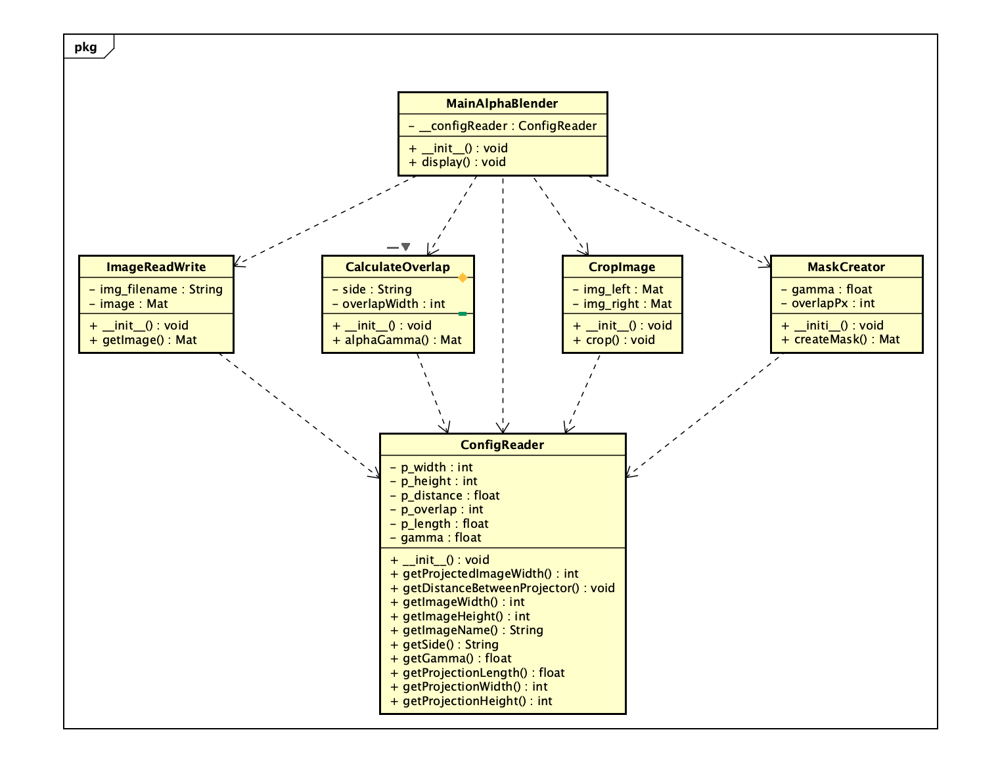

Design and architecture  Original team screenshot from the shared Drive, dated 29 October 2026. This records the design at that time; it is not a claim that every interface matches the current code. Editable Astah class diagram — Drive file last modified 18 October 2026; older than the screenshot above. Historical overview and design document — original PG1-11 attachment. Current software run guide.